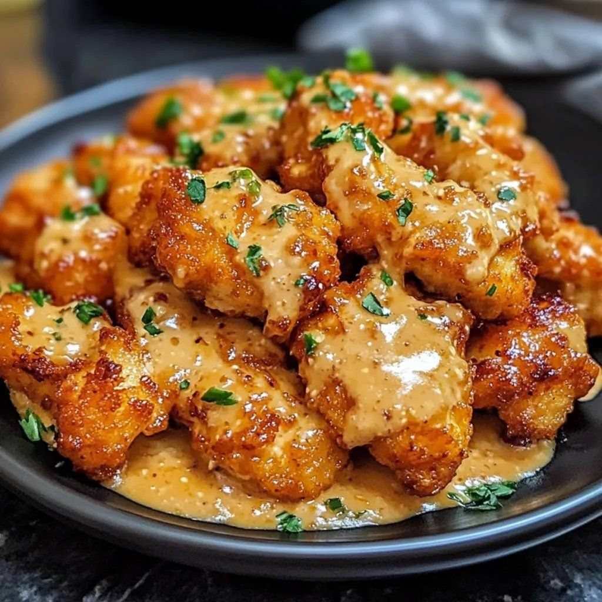

Bang Bang Chicken

- Meal
- Dinner
- Serves
- 6
- Protein
- chicken
- Cook
- stovetop (deep-fry, twice) · ~30 min active / ~40 min total (incl. 15 min marinate) · moderate
- Make-ahead / leftovers
- no / yes (store chicken and sauce separately; reheat in oven or air fryer)
- Mediterranean
- no
- WW tier
- heavy
- Status
- Trying out (probation)
LiLi Cooks' twice-fried bang bang chicken bites: chicken breast cubes soaked in milk and egg, shaken in potato starch and flour, fried twice, then tossed in a creamy mayo, honey, sweet chili, and gochujang sauce. Not One-Pan Bang Bang Salmon Potato Bake, which is baked fish with a yogurt sauce. No fish or shellfish, so no fish-free swap is needed.
Amounts are scaled ×1.5 to serve 6. The source amount (serves 4) is in brackets.
Ingredients
Marinade
- 1/2 cup milk [1/3 cup]
- 2 large eggs [1] (1.5 rounded up)
- 1.5 lb boneless, skinless chicken breasts, cut into 1-inch cubes [1 lb]
Coating
- 6 Tbsp potato starch (or cornstarch) [1/4 cup]
- 6 Tbsp all-purpose flour [1/4 cup]
- 3/4 tsp salt [1/2 tsp]
- 3/8 tsp black pepper [1/4 tsp]
- 3/8 tsp shichimi togarashi (or cayenne or red pepper flakes) [1/4 tsp]
Frying
- Vegetable or canola oil, 2 inches deep in a deep saucepan (about 2–3 cups) [2 cups]
Sauce
- 6 Tbsp mayonnaise [1/4 cup]
- 3 Tbsp honey [2 Tbsp]
- 3 Tbsp sweet chili sauce [2 Tbsp]
- 1 1/2 tsp gochujang (or any hot sauce) [1 tsp]
To serve
- Scallions or toasted sesame seeds
- Brown rice (house rule; the source suggests jasmine) and a green salad or steamed broccoli
Method
- Whisk the milk and egg in a large bowl. Add the chicken, stir to coat, and marinate 15 min. Drain well and throw out the liquid.
- Mix the starch, flour, salt, pepper, and togarashi. Put the mix in a large zip bag with the chicken and shake until every piece is coated.
- Heat 2 inches of oil to 325°F. Fry 5–8 pieces at a time for about 90 s, then drain on paper towels, keeping batches apart.
- Raise the oil to 350°F. Fry each batch again for about 90 s until golden and crisp, then drain.
- In a large serving bowl, mix the mayo, honey, sweet chili sauce, and gochujang until smooth.
- Toss the chicken in the sauce and serve right away over brown rice.
Notes
- Scaled ×1.5 from LiLi Cooks' serves-4 recipe (15 min prep / 10 min cook as written; the 1.5× batch means more fry batches, so the active time here is an estimate). The X post links to the full recipe page, and all amounts come from that page. Two eggs is a rounding of 1.5.
- House notes (do not change the recipe): brown rice, not jasmine. Gochujang is mild here but can go on the side for the kids. A splatter screen helps. Air-fryer or oven-baking the coated chicken would make it lighter, but that is untested.
- a fish-free plate / fish: no fish in the recipe. Sweet chili sauce and gochujang normally contain no fish, but check the labels (some Asian sauces add fish sauce or anchovy).
- heavy (twice deep-fried, mayo sauce) is the week's ≤1 heavy. Not Mediterranean (fried, mayo, no olive oil, no vegetables in the dish): only #2 (poultry) is met. Not red meat.